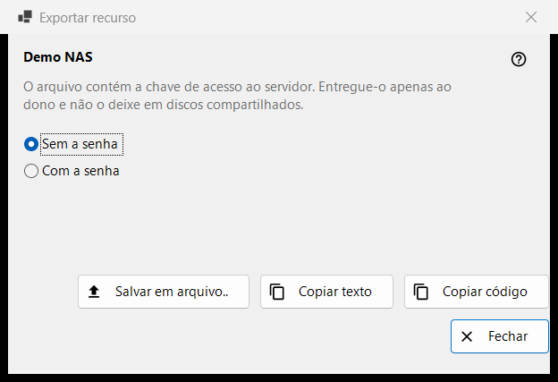
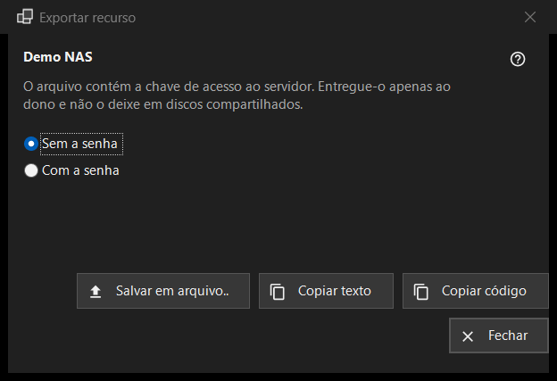

Exportar recurso
Finalidade
Prepara as configurações de um servidor SFTP para que outro computador ou um telefone possa importá-las. Abre-se em «Exportar..» no menu «Mais» da lista de recursos e precisa de um recurso selecionado; uma pasta compartilhada pelo Share Manager é exportada a partir do Share Manager.


Nesta ordem
- Leia o aviso abaixo do nome do recurso.
- Escolha «Sem a senha» (padrão) ou «Com a senha».
- Pressione «Salvar em arquivo..», ou copie as configurações como texto ou como um código curto.
- Entregue o resultado apenas ao seu dono.
Os elementos
O aviso
A linha abaixo do nome diz que o arquivo leva a chave de acesso ao servidor: entregue-o só ao seu dono e nunca o deixe em discos compartilhados. Vale para o arquivo, para o texto copiado e para o código igualmente.
Sem ou com a senha
«Sem a senha» vem selecionado no início. «Com a senha» só fica ativo quando a senha salva pode ser lida de volta; caso contrário aparece a dica «A senha não está salva - o arquivo ficará sem ela.». A senha é decifrada na memória para a exportação e não vai a nenhum outro lugar.
Salvar, copiar texto, copiar código
«Salvar em arquivo..» grava um arquivo .fmscfg por meio de uma caixa de diálogo de salvamento; a gravação recusa discos FAT ou exFAT, discos de rede e pastas que outros usuários podem alterar, e nunca deixa um arquivo escrito pela metade. «Copiar texto» coloca o documento de configurações na área de transferência e «Copiar código» um código curto com o mesmo conteúdo. Ambos são copiados com as marcas de privacidade (sem histórico da área de transferência, sem sincronização na nuvem). A linha de estado mostra o resultado.
O que pode ser exportado
Apenas um servidor SFTP cuja chave o programa já lembre. A janela se abre em qualquer caso, e uma recusa aparece na linha de estado quando você pressiona um botão: uma pasta de rede (SMB) não pode ser descrita por este arquivo; a chave do servidor não está lembrada (abra o recurso uma vez e confirme a chave); o recurso não tem um endereço para entregar; a pasta está escrita de um modo que o arquivo não aceita (corrija-a em «Editar..»).